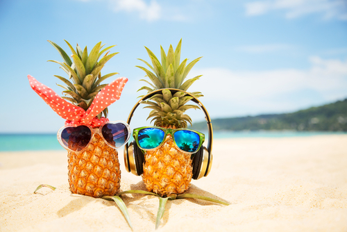

おいかわの自己紹介
こんにちは、おいかわです。名前は、ゆいなです！
誕生日は、12月26日です。山羊座です。
誕生日を言うとプレゼントを毎回クリスマスと同じにされるのではないかと言われるのですが、それはないです。
TWICEが好きで毎日YouTubeで聞いています。
なので、韓国語を喋れるように夏休み中にたくさん韓国のバラエティを見ようと思っています！
TWICEについては他のリンクに書いたページがあるのでそっちでぜひ見てください！
私の好きなモノ・コトは、TWICE以外には食べることが好きです。
お腹も空いていないのに食べてしまうことが多々あって体重も増えてきてしまいました...。
あともう一つ夏休みに挑戦したいことは、自分のホームページを授業で習ったこと以上のものを使って作ることです！
今は授業で習ったことしか使っていないので色々調べて作ってみたいんですけど、
サーバーにあげても学校に繋がっちゃうので完璧個人のホームページにしたいですね！
自己紹介は終わりです。